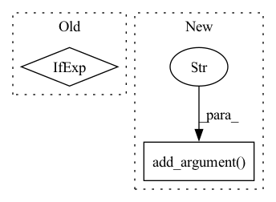

Pattern ID :18642

Before Change
def main():
device = "cuda:0" if torch.cuda.is_available() else "cpu"
// "facebook/opt-1.3b", "facebook/opt-350m" // "gpt2"
checkpoint = "facebook/opt-350m"
After Change
parser.add_argument("--num-shards", default=2100,
help="Number of shards to create. WARNING: Don"t change across runs on the same dataset.",
type=int)
parser.add_argument("--shard-index", default=0,
help="Particular shard to process. Must be less than num_shards",
type=int)
parser.add_argument("--batch-size", default=42,
help="Batch size for feature extraction.",
type=int)
parser.add_argument("--gpuid", default=0,
In pattern: SUPERPATTERN
Frequency: 3
Non-data size: 2
Instances
Fragment ID: 60850356
Project Name: microsoft/archai
Commit Name: 1f0a38e723b2db5c6bc6d461c0e1193ac22306bb
Time: 2022-12-16
Author: dedey@microsoft.com
File Name: scripts/misc/hf_featurize.py
M Class Name: AnonimousClass
N Class Name: AnonimousClass
M Method Name: main(0)
N Method Name: main(0)
M Parent Class:
N Parent Class:
M File Name: scripts/misc/hf_featurize.py
N File Name: scripts/misc/hf_featurize.py
M Start Line: 17
M End Line: 56
N Start Line: 18
N End Line: 87
'>
Before Change
parser.add_argument("--hf-token", default="true", type=str,
help=f"{argdoc.HF_TOKEN}. Defaults to "true" (required by pyannote)")
args = parser.parse_args()
args.device = torch.device("cpu") if args.cpu else None
args.hf_token = utils.parse_hf_token_arg(args.hf_token)
// Download pyannote models (or get from cache)
After Change
parser.add_argument("--beta", default=10, type=float, help=f"{argdoc.BETA}. Defaults to 10")
parser.add_argument("--max-speakers", default=20, type=int, help=f"{argdoc.MAX_SPEAKERS}. Defaults to 20")
parser.add_argument("--batch-size", default=32, type=int, help=f"{argdoc.BATCH_SIZE}. Defaults to 32")
parser.add_argument("--num-workers", default=0, type=int,
help=f"{argdoc.NUM_WORKERS}. Defaults to 0 (no parallelism)")
parser.add_argument("--cpu", dest="cpu", action="store_true",
help=f"{argdoc.CPU}. Defaults to GPU if available, CPU otherwise")
parser.add_argument("--output", type=Path, help=f"{argdoc.OUTPUT}. Defaults to no writing")
parser.add_argument("--hf-token", default="true", type=str,
'>
Fragment ID: 60850358
Project Name: juanmc2005/streamingspeakerdiarization
Commit Name: e2c301a64f6a8be016f5842806de4c6fd7e70bbc
Time: 2023-03-10
Author: juanmc2005@hotmail.com
File Name: src/diart/benchmark.py
M Class Name: AnonimousClass
N Class Name: AnonimousClass
M Method Name: run(0)
N Method Name: run(0)
M Parent Class:
N Parent Class:
M File Name: src/diart/benchmark.py
N File Name: src/diart/benchmark.py
M Start Line: 36
M End Line: 54
N Start Line: 11
N End Line: 47
'>
Before Change
"- Entity-span detection: ["O", "B-ENT", "I-ENT", "O", "B-ENT", "O", "B-ENT"]")
parser.add_argument("--return-ci", action="store_true", help="return confidence interval by bootstrap")
opt = parser.parse_args()
level = logging.DEBUG if opt.debug else logging.INFO
logging.basicConfig(format="%(asctime)s %(levelname)-8s %(message)s", level=level, datefmt="%Y-%m-%d %H:%M:%S")
// train model
model = TransformersNER(opt.model)
After Change
"- NER : ["O", "B-PER", "I-PER", "O", "B-LOC", "O", "B-ORG"]"
"- Entity-span detection: ["O", "B-ENT", "I-ENT", "O", "B-ENT", "O", "B-ENT"]")
parser.add_argument("--return-ci", action="store_true", help="return confidence interval by bootstrap")
parser.add_argument("-b", "--batch-size", help="batch size", default=32, type=int)
opt = parser.parse_args()
// train model
model = TransformersNER(opt.model)
'>
Fragment ID: 60850359
Project Name: asahi417/tner
Commit Name: 9abb0915720c1f0eb11982a7c424fb5c3e1d98d5
Time: 2022-08-06
Author: asahi1992ushio@gmail.com
File Name: tner/tner_cl/evaluate.py
M Class Name: AnonimousClass
N Class Name: AnonimousClass
M Method Name: main(0)
N Method Name: main(0)
M Parent Class:
N Parent Class:
M File Name: tner/tner_cl/evaluate.py
N File Name: tner/tner_cl/evaluate.py
M Start Line: 32
M End Line: 34
N Start Line: 11
N End Line: 34